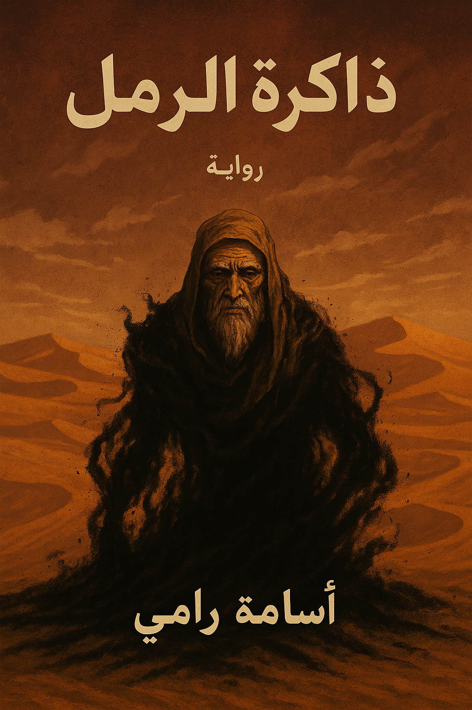

عن الرواية
تدور أحداث الرواية في قلب الصحراء العربية، حيث تلتقي أرواح الماضي والحاضر في مواجهة مصيرية. الأبطال الأربعة، كل منهم يحمل سراً خاصاً به، يجدون أنفسهم مجبرين على التعاون لكشف ألغاز الرمال السوداء والعلامة الغامضة التي تهدد بقلب العالم رأساً على عقب.
بين العواصف الرملية والصحاري القاحلة، تتكشف قصة مليئة بالغموض والإثارة، حيث لا شيء كما يبدو، وكل خطوة قد تكون فاصلة بين الحياة والموت.
